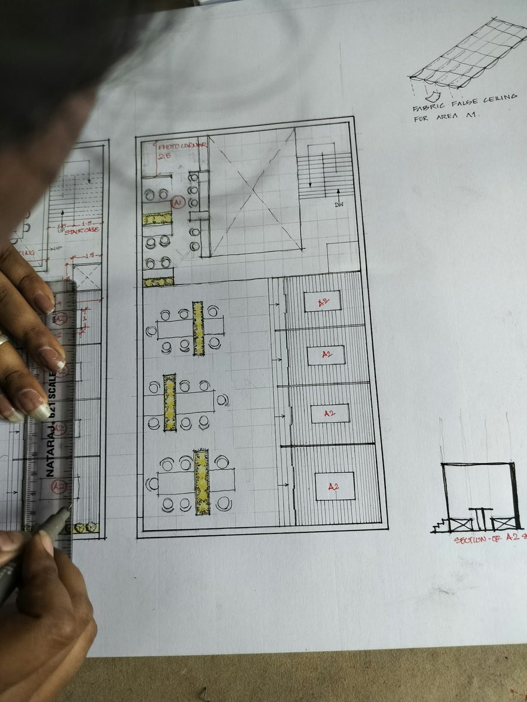
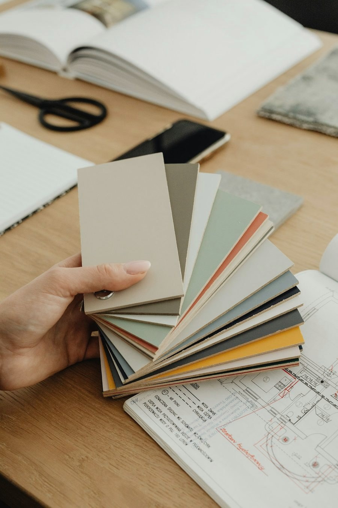
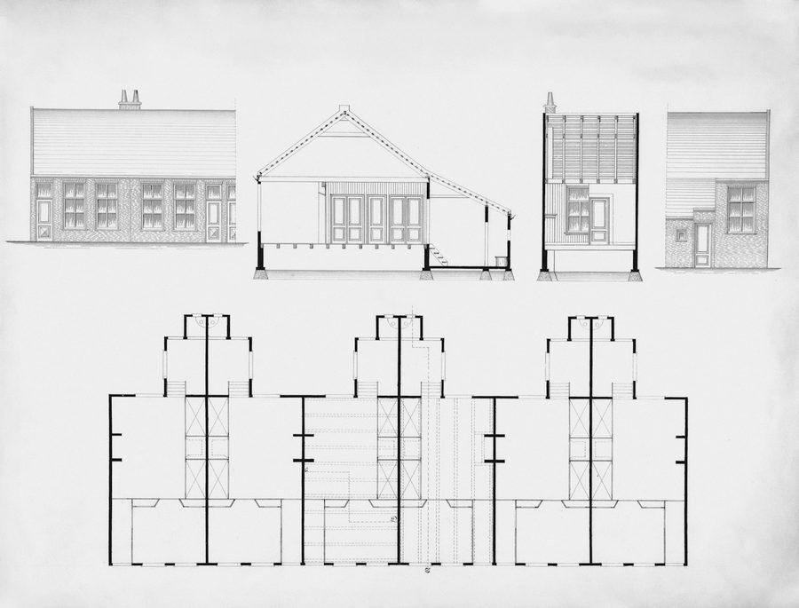
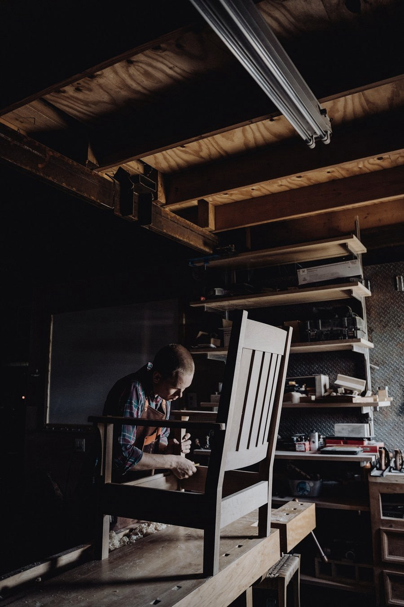
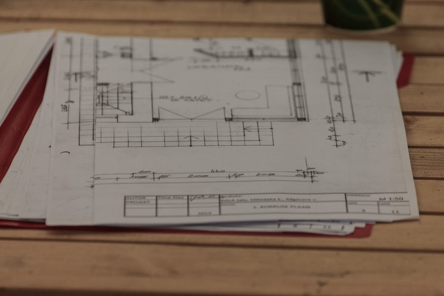
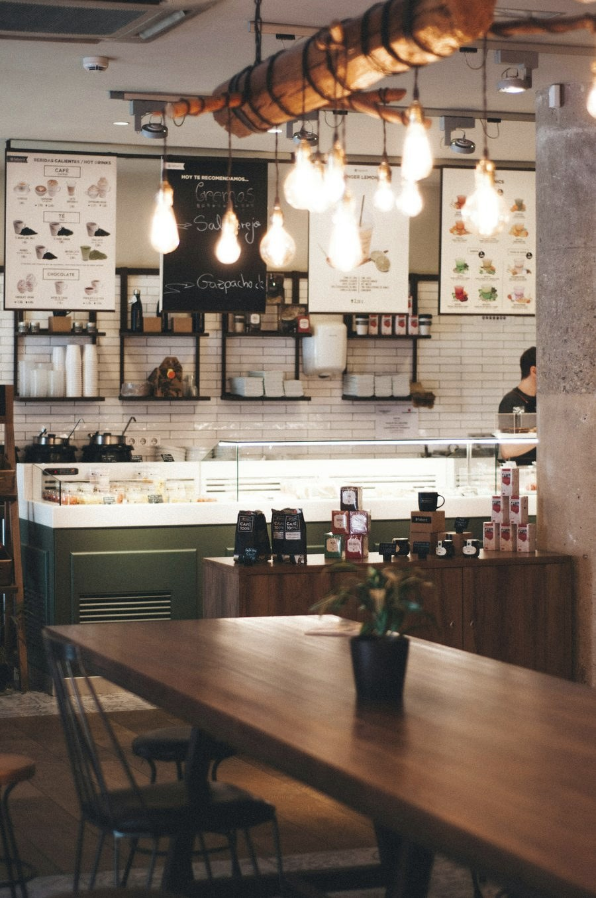

Süreçler
-

Yerinde görüşme
İlk görüşmeyi mekânda yaparız. Ölçüleri alır, alanı kimlerin kullanacağını ve nelere ihtiyaç duyduklarını konuşuruz.
-

Yerleşim eskizleri
Aynı mekân için farklı yerleşimler çizeriz. Girişi, geçişleri ve oturma düzenini bu eskizler üzerinden karşılaştırırız.
-

Plan ve malzeme
Seçilen planı üç boyutlu görsellerle inceleriz. Yüzeyleri ve mobilyaları malzeme örnekleriyle birlikte değerlendiririz.
-

Uygulama çizimleri
Planları ölçülendirir, kesitleri ve birleşim detaylarını çizeriz.
-

Onaylar
Onay gerektiren çizimleri elektrik ve mekanik proje ekipleriyle birlikte gözden geçiririz.
-

İmalat detayları
Sabit mobilyaların, kaplamaların ve aydınlatmanın birleştiği yerleri çizimde tarif ederiz.
-

Teklifler
Üreticilerden aynı çizimler için teklif isteriz. Malzemeyi, işçiliği ve fiyata nelerin dâhil olduğunu karşılaştırırız.
-

Atölyede üretim
Mekâna özel mobilyanın ölçülerini ve yüzey bitişini montajdan önce atölyede kontrol ederiz.
-

Şantiyede
Uygulamayı çizimlerle karşılaştırırız. Sahada değişmesi gereken bir ölçü varsa ilgili detayı yeniden çizeriz.
-

Teslim
Mekânı birlikte gezeriz. Eksik işleri kayda alır, kullanım sırasında ortaya çıkan soruları takip ederiz.